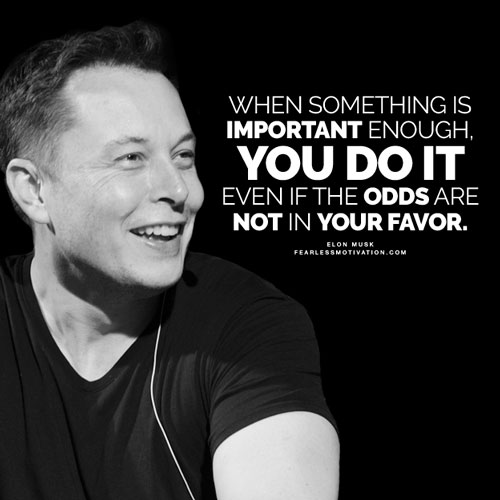

Elon Musk

Biography
- Entrepreneurial Visionary: Elon Musk, born on June 28, 1971, in Pretoria, South Africa,
is a renowned entrepreneur known for his ambitious and innovative ventures. He co-founded
Zip2, an online business directory, and later founded X.com, which eventually became PayPal
after a merger.
- Space Exploration Pioneer: Musk's vision extended to space exploration with SpaceX, founded in 2002. The
company aimed to make space travel more accessible and reduce its cost through the development of reusable
rockets. SpaceX's achievements include the Falcon 1, Falcon 9, and Falcon Heavy rockets, as well as the
Dragon spacecraft.
-
Electric Car Revolution: Musk's influence on the automotive industry is evident through Tesla,
founded in 2003. He led the development of electric vehicles (EVs) that combine performance and
sustainability. Tesla's Model S, Model 3, Model X, and Model Y have reshaped perceptions of EVs and
accelerated the transition to cleaner transportation.
-
Renewable Energy Advocate: Musk's commitment to sustainability extends to renewable energy solutions.
He played a pivotal role in the creation of SolarCity, a solar energy services company, and Tesla's energy
division, which produces solar panels and Powerwall battery storage solutions for homes and businesses.
-
Neuralink and The Boring Company: Musk's ventures also include Neuralink, a company aimed at
developing brain-computer interface technology, and The Boring Company, focused on tunnel construction and
urban infrastructure. These projects showcase his ongoing drive to tackle complex problems with innovative
solutions.